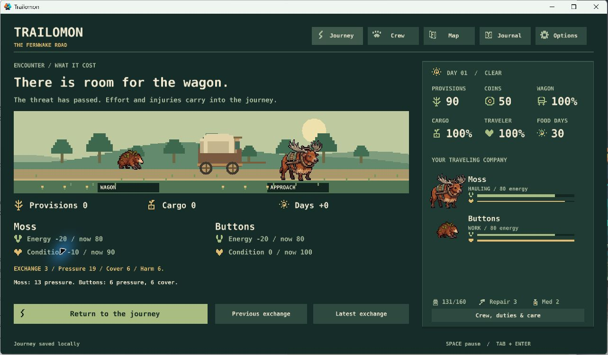
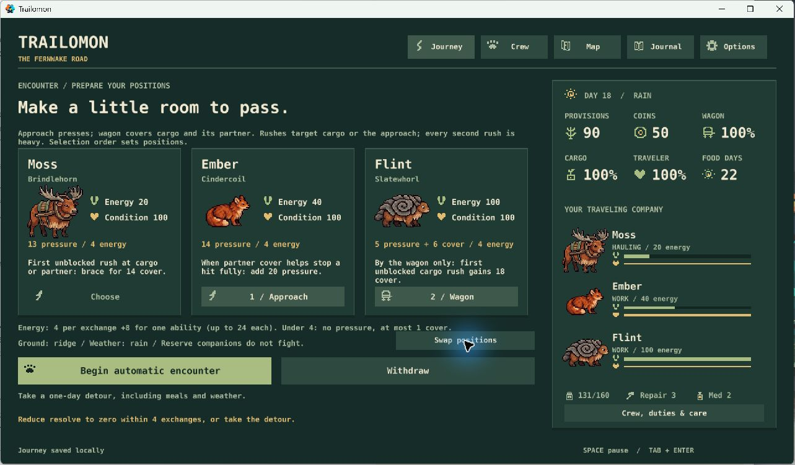

Trailomon · owner review
Prepared crews, automatic encounters
The first automatic-combat pass is playable. This report separates implemented work from optional follow-ups. Astronarch leads the combat direction; Automon informs creature-party appeal.
Verdict: core systems, ready for tuning
Preparation now matters in play: assign approach and wagon roles, watch species abilities combine, pause or step when you want, then account for persistent costs. The small roster and quiet expedition remain intact. Equipment and new enemies are outside this batch.
What felt good
New-player role: the original event still offered food or distraction before fighting. Moss and Buttons protected every provision; the result showed 20 energy spent by each and 10 condition lost by Moss. Returning to travel preserved those costs.

Expert role: with Moss tired, I selected Ember and Flint, swapped their positions, and left Moss in reserve. Flint's Stone Shelter blocked the cargo rush; Ember's Warmth Display followed it. Closing and reopening retained the pending third exchange, positions, spent abilities, energy, injuries, and resolve, and resumed paused.


I then withdrew at that saved boundary. The detour charged one day and four food exactly once. The crew also received that day's normal recovery; the result reports net changes. Acknowledging the report returned to travel without another charge.
Evidence and limits
- 29 Lua checks, 27 native screen states, native save/backup recovery, and actual mouse-driven Windows playtests pass.
- 360 bounded combat scenarios cover all single creatures and ordered pairs. A separate 5,760-encounter CSV varies scenario, ground/weather, starting energy, and seeds 1–20.
- At 100 starting energy, scavengers were held off in all 1,440 sampled cases, with widely varying injuries and cargo damage. Territorial encounters succeeded in 420 of 1,440. At 16 energy, territorial encounters won none of 1,440: tired crews should seriously consider the detour.
- A fighting-first journey bot delivered on time in 5 of 40 runs, with 35 late arrivals. The unchanged two-strategy baseline delivered in 37 of 80. These strategies differ in other choices; this is a warning for tuning, not an isolated estimate of combat's effect.
- Timing, focus loss, menus, save errors, stepping, and saved boundaries are checked against the actual controller. Injected keys still do not reach this Windows game reliably, so physical keyboard usability remains a human verification limit; native handler tests cover Space, navigation, and activation.
- Art uses existing selected creature studies and restrained movement. Finished creature action poses and richer wilderness scenery are still planned work.
Already fixed
A burst of redraws could exhaust GUI nodes. Redraws now coalesce once per frame. A mouse event arriving before the first screen could crash startup; initial controls now exist immediately, with a regression test. Repeated corrected launches and the quit/resume playtest passed. Result text now explicitly identifies net changes, including detour recovery.
Optional follow-ups
These are new proposals, separate from P1–P5 already approved. YES schedules the bounded change; NO drops it. Blank ideas stay unbuilt. The next approved work remains combat tuning before equipment.
C1Show the next ability trigger in context
Alongside each creature's permanent description, show a short reason for its next-exchange status: cargo rush, heavy rush, partner defense, wrong position, insufficient energy, or already used. Keep the wording tied to the actual resolver.
Evidence: the expert pairing worked, but the player must mentally combine three descriptions to predict the follow-up. The log explains it only afterward.
Cost: one focused UI/rules-preview PR and equivalence checks; no new combat rules. Recommendation: YES.
C2Give the guardian a distinct threat pattern
Keep the existing guardian and four-exchange limit, but prototype an authored cargo shove followed by an approach warning and heavy rush. Show the pattern before commitment. Compare it with today's shared random-target pattern before adopting it.
Evidence: both current enemies use the same cargo/approach probabilities and every-second heavy rush; objective and costs differ more than behavior.
Cost: one bounded behavior experiment, updated previews, saves and balance scenarios. Recommendation: YES, after C1.
C3Connect the recap to the next travel duty
Add one useful consequence line when combat leaves the assigned hauler tired, or a crew member below its known crossing/foraging effort requirement. Name the task and the existing threshold; do not introduce another resource.
Evidence: the low-energy sweep and fighting-first bot show why victory alone is an incomplete measure of a good expedition decision.
Cost: one small contextual-report PR and threshold checks. Recommendation: YES.
C4Replace exchanges with independent attack clocks
Move to individual attack timing and recurring ability cooldowns for a more continuous autobattle.
Evidence: this could deepen timing interactions, but the present prototype has only two threats and the discrete system is readable and save-safe. We have not shown that continuous clocks improve the expedition rhythm.
Cost: a larger combat rewrite, animation work, and a new balance/save pass. Recommendation: NO for this milestone.